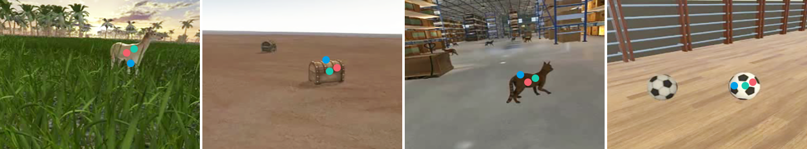

FixationNet: Forecasting Eye Fixations in Task-Oriented Virtual Environments
Zhiming Hu, Andreas Bulling, Sheng Li, Guoping Wang
IEEE Transactions on Visualization and Computer Graphics (TVCG, IEEE VR 2021 Journal-track), 2021, 27(5): 2681-2690.
Best Journal Paper Nominees

Abstract
Human visual attention in immersive virtual reality (VR) is key for many important applications, such as content design, gaze-contingent rendering, or gaze-based interaction. However, prior works typically focused on free-viewing conditions that have limited relevance for practical applications. We first collect eye tracking data of 27 participants performing a visual search task in four immersive VR environments. Based on this dataset, we provide a comprehensive analysis of the collected data and reveal correlations between users’ eye fixations and other factors, i.e. users’ historical gaze positions, task-related objects, saliency information of the VR content, and users’ head rotation velocities. Based on this analysis, we propose FixationNet – a novel learning-based model to forecast users’ eye fixations in the near future in VR. We evaluate the performance of our model for free-viewing and task-oriented settings and show that it outperforms the state of the art by a large margin of 19.8% (from a mean error of 2.93° to 2.35°) in free-viewing and of 15.1% (from 2.05° to 1.74°) in task-oriented situations. As such, our work provides new insights into task-oriented attention in virtual environments and guides future work on this important topic in VR research.Presentation Video
Demo Video
Links
Doi: doi
Paper: paper.pdf
Code: code
Dataset: dataset
Slides: slides.pdfExperimental scenes: experimental senes
Supplementary materials: supplementary materials
BibTeX
@article{hu21fixationnet,
author = {Hu, Zhiming and Bulling, Andreas and Li, Sheng and Wang, Guoping},
title = {FixationNet: Forecasting Eye Fixations in Task-Oriented Virtual Environments},
journal = {IEEE Transactions on Visualization and Computer Graphics},
year = {2021},
doi = {10.1109/TVCG.2021.3067779},
pages = {2681--2690},
volume = {27},
number = {5},
url = {https://cranehzm.github.io/FixationNet.html}}